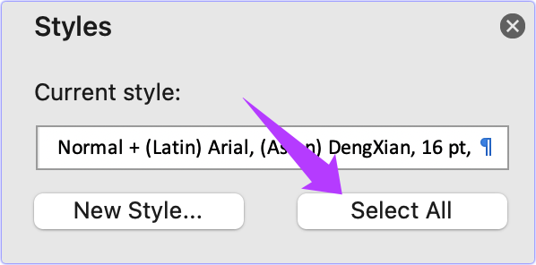
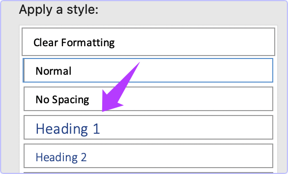
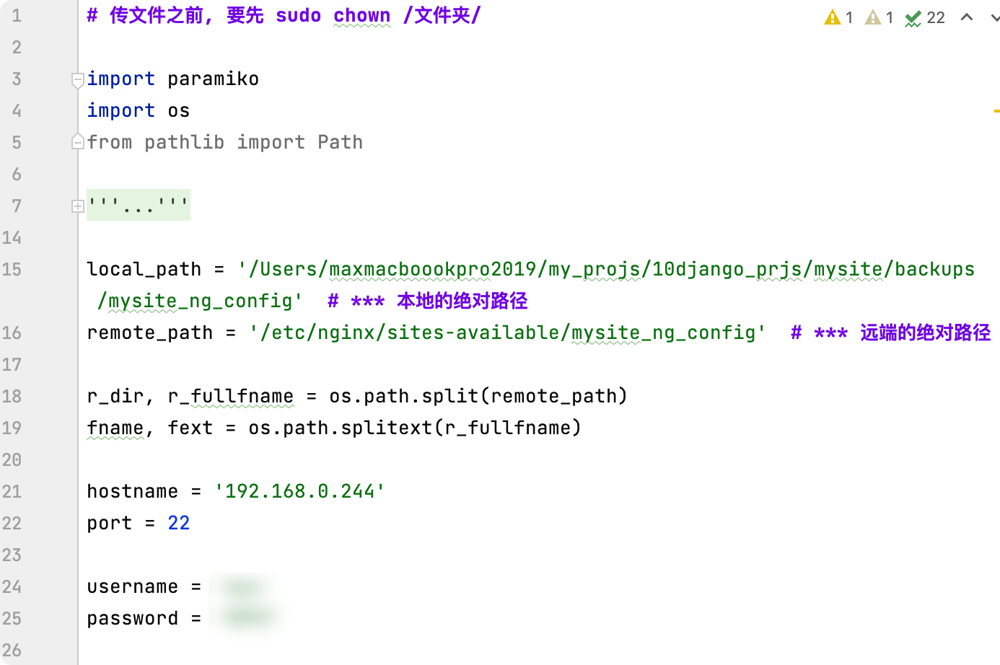
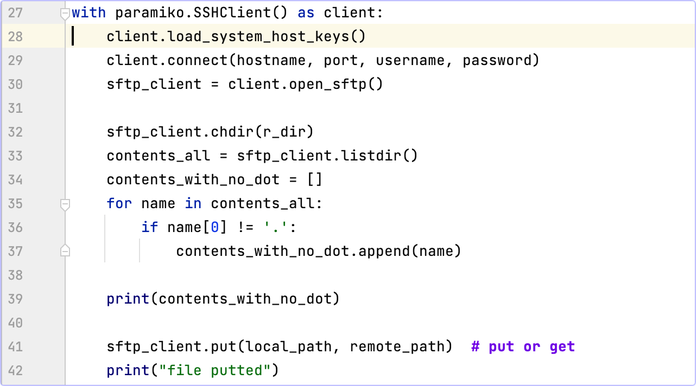
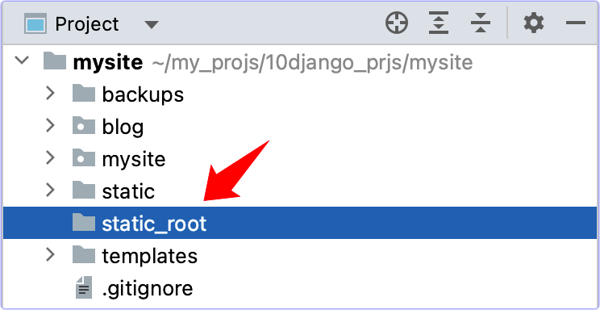

如何部署Django4.1项目
题外话
下载 docx 之后，要顺利发博客，还需要调整格式。
√打开Styles Pane。
√在文中定位一个式样后，把式样全选出来select all

√apply 一个 word 的官方式样

要点:
- √Ubuntu Server 20.04 LTS + Python 3.10.9 + Django 4.1.6
- √Gunicorn: (Green unicorn) 作为 WSGI server
- √Nginx: as a reverse proxy server and static file server
- √Supervisor: to manage Gunicorn processes
初始设置
准备清单:
- √IP address of your server
- √Username of the Ubuntu user account
- √Password for the user account if you are using a password to connect to the server. Your cloud provider usually emails this to you.
- √Key file if you are using key file instead of a password to connect to the server. Your cloud provider will ask you to download this before creating the server.
ssh 连接到服务器
- √ssh your-username@your-server-ip-address
- 如果有秘钥文件, 则ssh your-username@your-server-ip-address -i path-to-your-key-file
- 如果文件不让访问, 则chmod 600 path-to-your-key-file
- √sudo apt update
用 git下载源代码到服务器
- √安装: sudo apt install git
- √mkdir ~/projects
- √cd ~/projects
- 现在还不能执行 git clone your-repository-url, 因为直接链接 https 链接的方式作废了, 要安装 git cli 才能 clone.
- √用下面的行 1 和行 2 来安装git cli ↓
Bash
type -p curl >/dev/null || sudo apt install curl -y
curl -fsSL https://cli.github.com/packages/githubcli-archive-keyring.gpg | sudo dd of=/usr/share/keyrings/githubcli-archive-keyring.gpg && sudo chmod go+r /usr/share/keyrings/githubcli-archive-keyring.gpg && echo "deb [arch=$(dpkg --print-architecture) signed-by=/usr/share/keyrings/githubcli-archive-keyring.gpg] https://cli.github.com/packages stable main" | sudo tee /etc/apt/sources.list.d/github-cli.list > /dev/null && sudo apt update && sudo apt install gh -y
gh auth login # 装好后 login, 按照步骤认证机器 |
- √行 3 用于验证和登录 ↑
- √首次下载源代码: git clone https://github.com/ShuYi2023/mysite
- 将来代码更新后, 可以用 git pull origin master 拉取代码
安装Python
- Ubuntu 20.04 默认的 Python 是 3.8 版本的.
- √在 Ubuntu 20.04 系统中安装 python3.10
Bash
sudo add-apt-repository ppa:deadsnakes/ppa
sudo apt update
sudo apt install python3.10 # 会安装最新版的 3.10.9.
# 安装 venv
sudo apt install python3.10-venv -y # 3.10 不能省略
# 如果要删除
sudo add-apt-repository --remove ppa:deadsnakes/ppa
sudo apt remove --autoremove python3.10 |
创建虚拟环境
Bash
max@ubserver:~$ mkdir envs # 创建 /home/max/envs/
max@ubserver:~$ cd envs
max@ubserver:~/envs$ python3.10 -m venv dj4 # 创建虚拟环境dj4, 3.10 不能省略
max@ubserver:~/envs$ ls dj4/
max@ubserver:~/envs$ source /home/max/yenvs/dj4/bin/activate # 激活虚拟环境
(dj4)pip install -i https://pypi.mirrors.ustc.edu.cn/simple/ django # 安装 Django
(dj4)python -m django --version # 查看 Django 版本, 4.1.6
(dj4)pip install -r requirements.txt # 要先在本机用 freeze 做好requirements.txt |
- √用科大的源安装: pip install psycopg2-binary -i https://pypi.mirrors.ustc.edu.cn/simple/
- pip 的时候, 科大的源比较快。
- 检查数据库是否有问题, √python manage.py migrate
Nginx 安装
- √sudo apt install nginx
- √sudo rm -f /etc/nginx/sites-enabled/default
- 保险起见, 再删除一个default文件: √sudo rm -f /etc/nginx/sites-available/default
- √创建配置文件: sudo nano /etc/nginx/sites-available/your_project_name ↓
Bash
server {
listen 80;
server_name _;
location / {
include proxy_params;
proxy_pass http://127.0.0.1:8000;
}
}
|
- 个人经验: 最好在本地用Pycharm创建和编辑配置文件, 然后把配置文件上传到服务器中. 参考↓


- √sudo ln -s /etc/nginx/sites-available/your_project_name /etc/nginx/sites-enabled/
- 检验: √sudo nginx -t
- 重启: √sudo systemctl restart nginx
- 访问ip, 如果报错 502, 则表明 Nginx 开始工作了
- √激活虚拟环境, √cd 到项目根目录下.
- 启动服务器, √python manage.py runserver
- Django mysite 应该能够正常工作了
- √ctrl_c 关闭服务.
Gunicorn 设置
- √安装: pip install gunicorn -i https://pypi.mirrors.ustc.edu.cn/simple/
- √cd 到你项目的根目录
- √用 gunicorn 启动服务: gunicorn your_project.wsgi (例如, gunicorn mysite.wsgi)
- √ctrl_c 关闭服务.
- √让服务后台运行, 并且不受 logout 的影响: √gunicorn your_project.wsgi -D
- √关闭在后台运行的 gunicorn: sudo pkill gunicorn
Supervisor 设置
- Supervisor 能够在 Gunicorn 进程被终止后, 重启进程.
- √安装: sudo apt install supervisor
- √修改配置文件: sudo nano /etc/supervisor/conf.d/your_project.conf ↓
Bash
[program:mysite]
command = /home/max/yenvs/dj4/bin/gunicorn mysite.wsgi -b 127.0.0.1:8000 -w 3
directory = /home/max/mysite |
- ↑在 command 中, 3=2*1(1 个核)+1, 其实我的 逻辑core =4, 是不是可以开 2*4+1=9 个线程?
- √通知 supervisor 配置变化了: sudo supervisorctl reread
- √更新: sudo supervisorctl update
- √重启所有进程: sudo supervisorctl restart all
Serving Static and Media Files
- 这时网站中的静态文件还不能得到服务.
- √修改 mystie.settings.py配置文件: STATIC_ROOT = os.path.join(BASE_DIR, 'static_root')
- √在项目根目录 mysite 下面创建 static_root/ 目录

- √搜集静态文件: python manage.py collectstatic
- √再次编辑 nginx 的配置文件: sudo nano /etc/nginx/sites-available/your_project_name ↓
Bash
server {
listen 80;
server_name _;
location / {
include proxy_params;
proxy_pass http://127.0.0.1:8000;
}
location /static/ {
root /home/your_ubuntu_username/projects/your_project/;
add_header Pragma public;
add_header Cache-Control "public";
}
location /media/ {
root /home/your_ubuntu_username/projects/your_project/;
add_header Pragma public;
add_header Cache-Control "public";
}
} |
- √检查一下: sudo nginx -t
- √重新启动 nginx: sudo systemctl restart nginx
这时应该好了.
注意事项
安装gunicorn后, 访问网站不要提供 port.
直接访问 192.168.0.244 即可